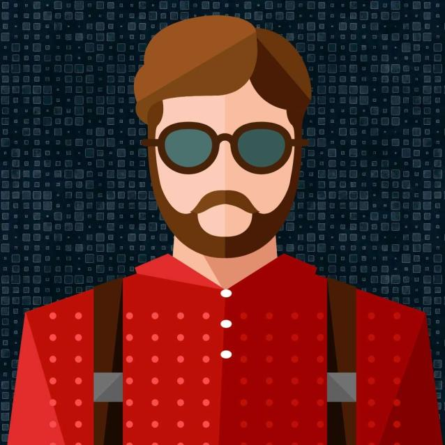
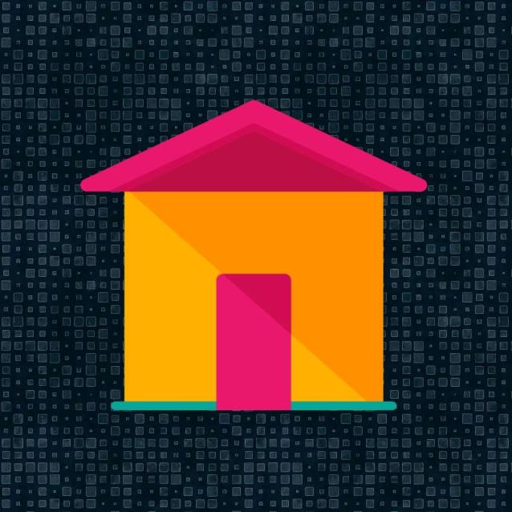
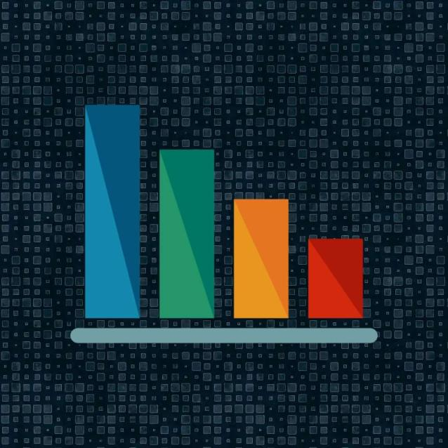
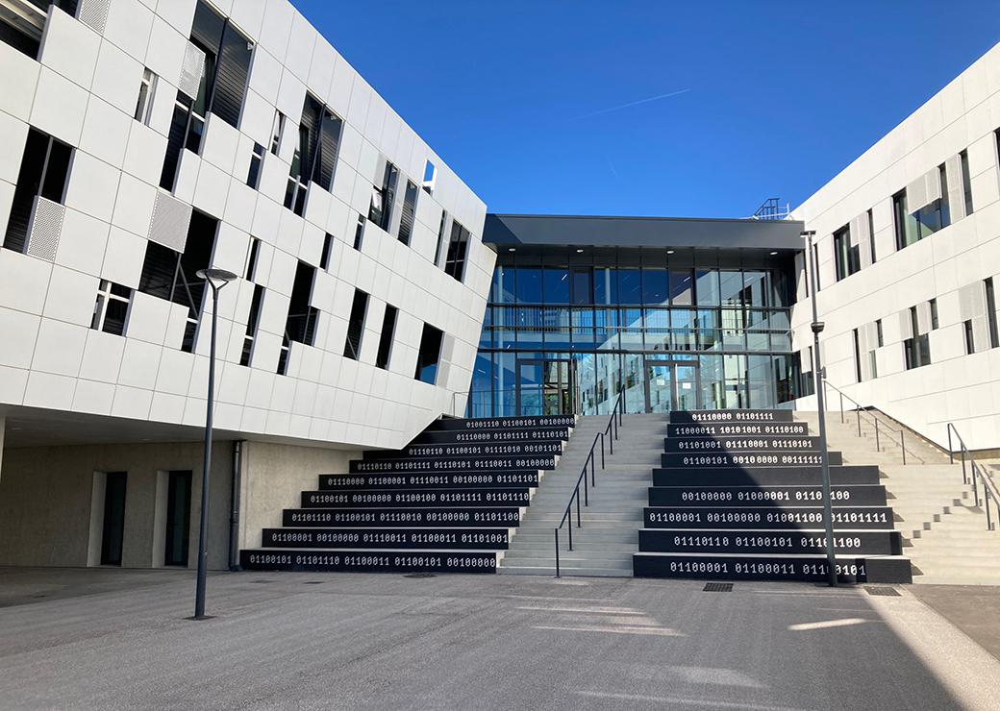
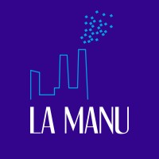
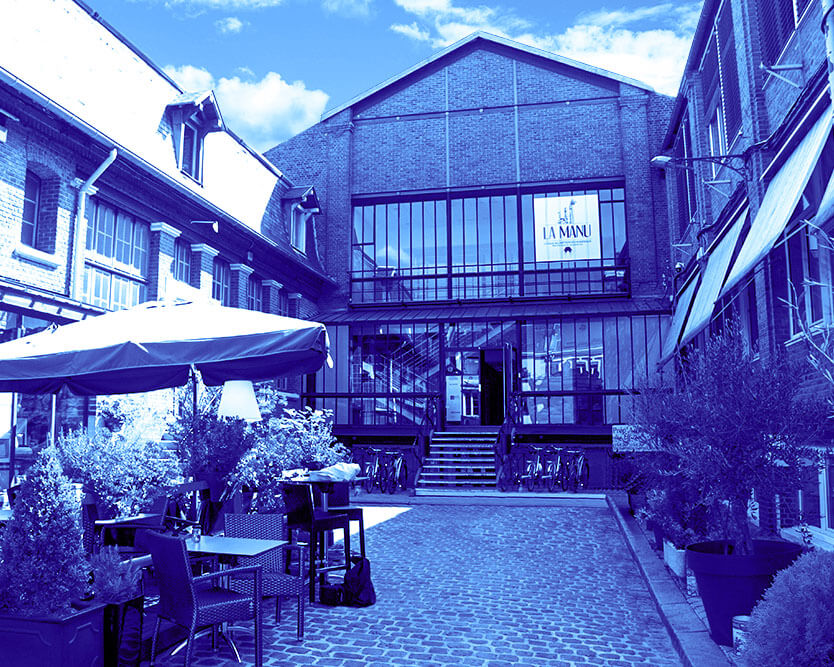

3
Presentation
Portfolio

Home
Profile

Skills

Branly

1st year at LA MANU

2nd year at LA MANU

Marius Hazart
marius.hazart@gmail.com
Marius Hazart
2nd year at LA MANU
Profile
I am a mainly back-end oriented developer passionate about algorithms. My expertise is based on the design, development, and maintenance of server infrastructure, as well as the effective management of databases. My goal is to provide effective technology solutions that improve application performance and scalability
Baccalaureate STI2D, Information Systems and Digital option (SIN), honors
I obtained my STI2D Baccalaureate with honors at the Lycée Edouard Branly. Initially enrolled in a general course with an option in Digital and Computer Sciences (NSI), I quickly discovered my true passion for digital professions. This is why I chose to reorient myself towards the STI2D sector, specialized in Information and Digital Systems (SIN). This decision solidified my desire to become a competent back-end developer with a focus on the real-world application of IT concepts.
Second year of Master in Digital Professions
I am currently in my second year of training at La Manu, where I am pursuing a Masters in Digital Professions. During this training, I acquired essential development skills, notably in JavaScript (JS), Vue.js, PHP, Python, Java, as well as Symfony for web development. I also developed skills in MySQL database management, DTP (Desktop Publishing), UX/UI (User Experience/User Interface), and web languages such as HTML and CSS.
Skills
The levels represented are affiliated with my level of understanding and development in each area rather than my level of skills
IP addressing
I developed a program in Python for IP address management, allowing to convert an address to binary, identify its class, calculate the subnet mask, and display essential information. This project demonstrated my mastery of IP addresses and programming in Python.
Rock Paper Scissors
I created a functional game of Rock-Paper-Scissors using JavaScript, with the particularity of saving the scores even if the page is reloaded or the game is exited. This project allowed me to develop my understanding of JavaScript , explore local storage features and master event management for a fluid and interactive gaming experience.
District noir
I collaborated with my team to develop the Black District game in Python, using the console to interact directly with the code. This project focused on strengthening our algorithmic logic, and it allowed us to practice working as a group on an algorithm-oriented project using the Python language.
PoPchill
I created an interactive website, PopChill, which uses JavaScript to query an API and display detailed information about films, including posters, descriptions, and a favorites system. This project strengthened my skills in web development and API manipulation to deliver a personalized cinematic experience.
La caverne aux infos (The news cave)
I designed and developed the website "La Caverne aux Infos" which presents newspaper articles dynamically using PHP and MySQL. This project involved sending SQL queries to an API to retrieve and display articles, while using a cookie system to personalize user preferences. We've also implemented a category system to organize article topics, providing a more targeted and personalized news experience.